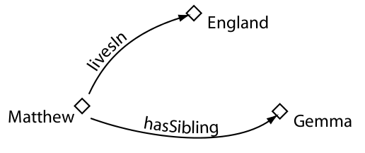
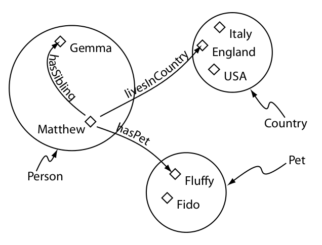
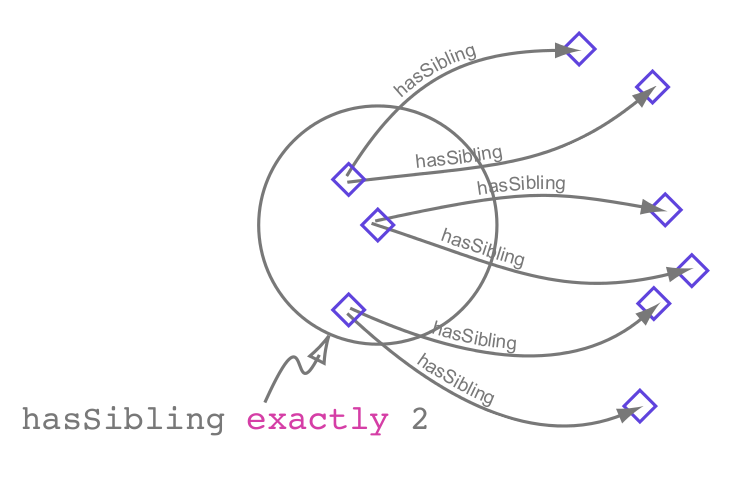
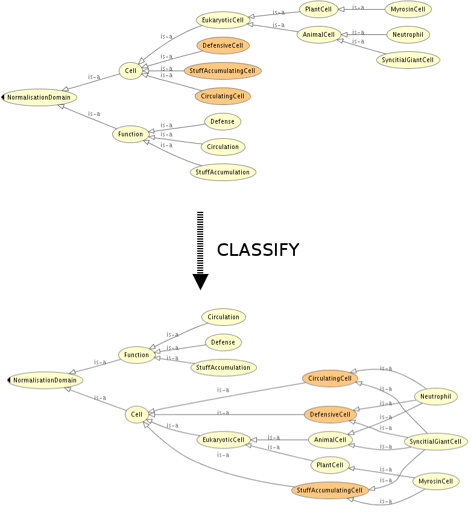

Building biomedical ontologies for a Life Sciences Semantic Web
3S Biology Summer School (Trento, 2014)
Mikel Egaña Aranguren
http://mikeleganaaranguren.com / mikel.egana@ehu.es
http://mikeleganaaranguren.wordpress.com/teaching/
http://mikel-egana-aranguren.github.io/3SBiologyTrento2014/
http://github.com/mikel-egana-aranguren/3SBiologyTrento2014

Life Sciences Semantic Web
Life Sciences Semantic Web
Semantic Web Stack

Ontologies and Semantic Web
Biomedical Ontologies

Functions
Robert Stevens and phil lord book chapter
Gene Ontology
Vocabulario controlado para describir la función molecular, el componente celular y el proceso biológico de genes (“Gene Products”)
Integración de información (GAF files), explotación estructura (ej. Term Enrichment)
OBO
ChEBI, Cell Type, Sequence Ontology, Phenotype Ontology, UberOntology, ...
"Meta-Ontologías": Basic Formal Ontology (BFO), OBO Relation Ontology (RO)
Mucho contenido de relativamente alta calidad pero ...
... la mayoría de las ontologías son muy pobres axiomáticamente
... OBO format (*)
Ontology engineering languages
OBO format ("DEPRECATED"!)

OWL
OWL es un estándar oficial del W3C para crear ontologías en la web con un semántica precisa y formal
OWL
OWL se basa en Lógica Descriptiva (DL)
Representación computacional de un dominio de conocimiento:
- Razonamiento automático: inferir conocimiento "nuevo" (*), consultas, consistencia, clasificar entidades contra la ontología, ...
- Integrar conocimiento disperso
Sintaxis OWL
Para ordenadores: RDF/XML, OWL/XML, ...

Para humanos: Manchester OWL Syntax, functional, ...

Semántica OWL
Una ontología OWL esta compuesta de:
- Entidades: las entidades del dominio de conocimiento, identificadas con URIs, introducidas por el desarrollador ("proteina", "participa_en", ...)
- Axiomas: relacionan las entidades mediante el vocabulario lógico que ofrece OWL
Una ontología puede importar otra (owl:import) y hacer referencia a sus entidades mediante axiomas
Entidades OWL
- Individuos
- Clases
- Propiedades
- Objeto
- Anotación
- Datos
Individuos

Propiedades

Clases

Semántica OWL
Una ontología OWL formada por individuos y clases es una "Base de Conocimiento" (KB) formada por:
- TBox (Terminological Box): clases (~ "esquema")
- Abox (Assertional Box): individuos (~ "datos")
Clases

Clase subclase
Clases equivalentes
Jerarquía de clases (Taxonomía)
Condiciones necesarias
Condiciones necesarias y suficientes
Restricción existencial (some)

Restricción universal (only)

Restricción a un individuo (value)

Restricciones cardinales

(+ QCR!) Manchester tutorial
Más axiomas para clases
disjointFrom
booleanos: not, or, and
Expresiones complejas
Propiedades OWL
Jerarquía propiedades
Jerarquía propiedad-subpropiedad (~taxonomía pero con propiedades), ej:
- interacciona con
- mata a
- estrangula a
- mata a
Características propiedades objeto

Características propiedades objeto

Características propiedades objeto
Características propiedades datos
Solo funcional
Dominio clases, rango datatypes
Propiedades anotación
Anotar con lenguaje natural entidades (propiedades, clases, individuos), axiomas, ontologías
Fuera de la semántica
rdfs:label, rdfs:comment, dublin core, a medida
Individuos
Miembro de una o más clases (Types)
Igual (SameAs) o diferente (DifferentFrom) a otro individuo
Relaciones binarias con otros individuos o datos (triples), positivas o negativas
Razonamiento automático
Un razonador infiere los "nuevos" axiomas que implican los axiomas que hemos introducido en la ontología
El razonador infiere todos los axiomas; es útil para tratar con conocimiento complejo
Open World Assumption (OWA)
(Falta de) Unique Name Assumption (¡owl:sameAs!)
Tareas más comunes razonamiento automático
Mantener taxonomía
Consistencia
Clasificar entidades y consultas
Mantener una taxonomía

Consistencia

Clasificar entidades, consultas
Clasificar entidades: dada una entidad nueva, como se relaciona con las demas entidades (types, equivalentTo, subClassOf, triples)
Una consulta es una clase anónima que clasificamos contra la ontología como si fuese una entidad
Ontology engineering tools
OWL API
http://owlapi.sourceforge.net/
http://github.com/owlcs/owlapi
Protege
TopBraid composer
Neon
Reasoners!?
Ontology engineering practices
Scope
Define and stick to a scope (e.g. Cell Cycle)
Identifiers
URI scheme common identifiers: identifiers.org alphanumeric ids + rdfs:label
Interoperability
Commonly used Upper Level Ontology (e.g. BFO)
Commonly used properties (e.g. RO)
Reuse exsiting ontologies, extend them if needed ...
... and only then, and if completely necessary, create new classes
Automate tasks
Manipulation: OWL API, OPPL, Tawny OWL, Mungall Releases: OORT, Version control (Mungall and Clark posts)..
Apply reasoning continously
Documentation
Use annotation properties a lot
Ontology Design Patterns
Pitfalls
Pitfall detector
Semantic Web best practices
Use isDescribedBy predicate
Community
OBO Foundry: Open, Common shared syntax, Unique identifier space, Versions, Delineated content, Definitions, OBO Relation Ontology, Well documented, Users, Collaboratively
Community
NCBO BioPortal